20160301
右键菜单(Right Menu)
绘图右键菜单
Drafting Right Menu


布线空白处右键菜单
Space Right Menu
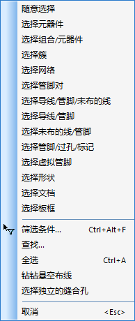
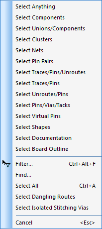
元件布局右键菜单
Component Placement Right Menu
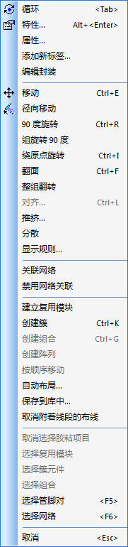
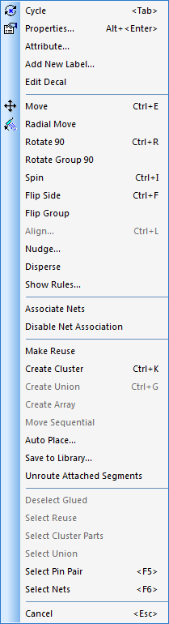
选择焊盘(Select Pad)
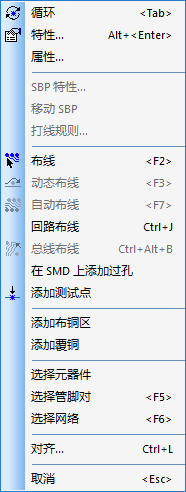
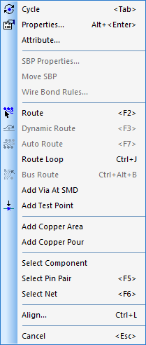
选择布线中的一小段(Select 1 Route)
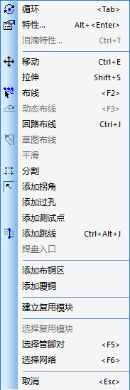
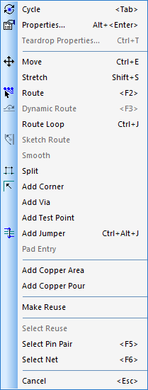
选择布线中的弯段(Select N Route)
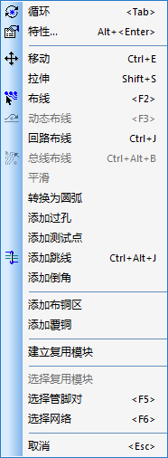
Select Right Menu
Select 2D Line
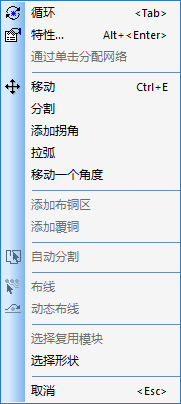
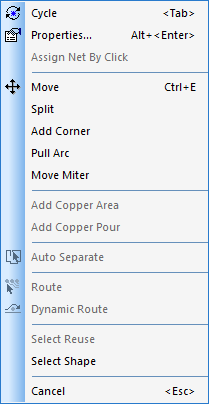
选择标签(Select Label)
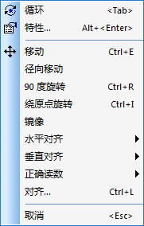
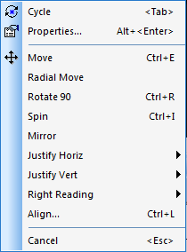
选择形状(Select Shapes)
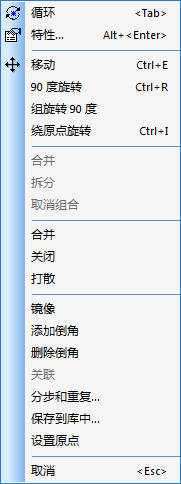
")
选择端点(Select Terminal)
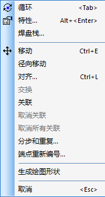
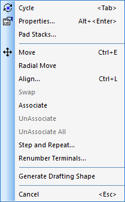